Next: เวลาเฉลี่ยก่อนการเสียหาย (MTTF)
Up: การประเมินเชิงปริมาณ
Previous: การประเมินเชิงปริมาณ
Contents
Index
อัตราการเสียหาย และฟังก์ชั่นความน่าเชื่อถือ
อัตราความเสียหาย คือจำนวนของอุปกรณ์อย่างหนึ่งที่คาดว่าจะเสียในช่วงเวลาที่กำหนด ตัวอย่างเช่น ถ้าคอมพิวเตอร์เสีย โดยเฉลี่ยหนึ่งตัวในทุก 2000 ชั่วโมง คอมพิวเตอร์ดังกล่าวจะมีอัตราความเสียหายเท่ากับ หนึ่งความเสียหายต่อ 2000 ชั่วโมง หรือ 1/2000 ความเสียหายต่อชั่วโมง
อัตราความเสียหายเป็นการวัดตัวหนึ่งที่ใช้ในการเปรียบเทียบระบบคอมพิวเตอร์ เช่นในการเลือกคอมพิวเตอร์ที่มาใช้งานในธนาคาร เราต้องการคอมพิวเตอร์ที่มีความเสียหายน้อยที่สุดเท่าที่จะเป็นไปได้ ถ้าเรานำระบบที่ออกแบบมาให้สามารถคงทนต่อความเสียหาย โดยใช้อุปกรณ์ทำงานซ้ำซ้อนกัน ระบบในลักษณะดังกล่าวควรจะมีอัตราความเสียหาย หรือ ล้มเหลวในการทำงานต่ำกว่าระบบที่ไม่ได้ออกแบบมาให้คงทนต่อความเสียหาย
เพื่อให้สามารถเข้าใจสมการทางคณิตศาสตร์ของอัตราความเสียหาย จำป็นต้องกล่าวถึงนิยามของฟังก์ชั่นความน่าจะเป็น. ความน่าเชื่อถือของระบบ  ของอุปกรณ์ หรือ ของระบบ นิยามเป็นความน่าจะเป็นแบบมีเงื่อนไขของระบบที่จะทำงานอย่างถูกต้องตลอดช่วงเวลา 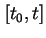 โดยที่ระบบทำงานอย่างถูกต้องที่เวลา 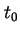.
สมมุติว่ามีอุปกรณ์ทั้งหมด
ของอุปกรณ์ หรือ ของระบบ นิยามเป็นความน่าจะเป็นแบบมีเงื่อนไขของระบบที่จะทำงานอย่างถูกต้องตลอดช่วงเวลา 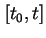 โดยที่ระบบทำงานอย่างถูกต้องที่เวลา 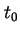.
สมมุติว่ามีอุปกรณ์ทั้งหมด  ชุด และให้อุปกรณ์ทั้ง ชุดเริ่มทำงานได้อย่างสมบูรณ์ที่เวลา . จากนั้นทำการบันทึกค่าอุปกรณ์ที่เสีย และอุปกรณ์ที่ยังทำงานได้ที่เวลา
ชุด และให้อุปกรณ์ทั้ง ชุดเริ่มทำงานได้อย่างสมบูรณ์ที่เวลา . จากนั้นทำการบันทึกค่าอุปกรณ์ที่เสีย และอุปกรณ์ที่ยังทำงานได้ที่เวลา  ให้ 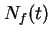 เป็นจำนวนอุปกรณ์ที่เสียที่เวลา และ 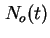 เป็นจำนวนอุปกรณ์ที่ยังทำงานได้ที่เวลา โดยสมมุติให้ถ้าอุปกรณ์เสียแล้วจะไม่สามารถกลับขึ้นมาทำงานได้อีก ค่าความน่าเชื่อถือของอุปกรณ์ที่เวลา มีค่าเท่ากับ
ให้ 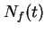 เป็นจำนวนอุปกรณ์ที่เสียที่เวลา และ 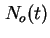 เป็นจำนวนอุปกรณ์ที่ยังทำงานได้ที่เวลา โดยสมมุติให้ถ้าอุปกรณ์เสียแล้วจะไม่สามารถกลับขึ้นมาทำงานได้อีก ค่าความน่าเชื่อถือของอุปกรณ์ที่เวลา มีค่าเท่ากับ
นั่นคือค่าความน่าจะเป็นที่อุปกรณ์ที่ทำงานได้ในช่วงเวลา ความน่าจะเป็นที่อุปกรณ์ไม่สามารถทำงานได้ เรียกว่าความไม่น่าเชื่อถือ (Unreliability) แสดงโดย
ที่เวลาใดๆ ค่า
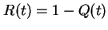 เนื่องจาก
เราสามารถเขียนฟังก์ชั่นของความน่าจะเป็นได้เท่ากับ
ทำการดิฟเฟอร์เรนชิเอทเทียบกับเวลาจะได้
ซึ่งสามารถเขียนได้เป็น
ค่าสมการของ และ
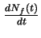
เป็นค่าชั่วขณะที่อุปกรณ์จะเสียหาย. ที่เวลาใดๆ
ระบบจะมีอุปกรณ์จำนวน ชุดที่ยังทำงานได้อยู่.
ถ้าเราหาร
ด้วย จะได้
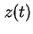
คือค่าฟังก์ชั่นของการเสียหายมีหน่วยเป็นจำนวนที่เสียหายต่อเวลา (ค่า
มีชื่อเรียกหลายชื่อได้แก่ Hazard Function, Hazard Rate,
Failure Rate Function)
ค่าฟังก์ชั่นของการเสียหาย สามารถแสดงได้หลายรูปแบบ
เช่นสามารถแสดงอยู่ในรูปของความน่าเชื่อถือ R(t) ได้เป็น
หรือแสดงอยู่ในรูปของความไม่น่าเชื่อถือ Q(t) เท่ากับ
ค่าดิฟเฟอร์เรนชิเอตของความไม่น่าเชื่อถือ
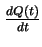 เรียกว่าฟังก์ชั่นความหนาแน่นของความเสียหาย (Failure Density Function)
ค่าฟังก์ชั่นของอัตราความเสียหายขึ้นอยู่กับเวลาเนื่องจากค่า และค่า
เปลี่ยนแปลงเป็นฟังก์ชั่นของเวลา อย่างไรก็ตามจากประสบการณ์พบว่า อุปกรณ์อิเล็กทรอนิกส์มีช่วงการทำงานในอายุการใช้งานที่ค่า ค่อนข้างคงที่. ความสัมพันธ์ระหว่างฟังก์ชั่นของอัตราความเสียหายกับเวลา ของอุปกรณ์อิเล็กทรอนิกส์ มักใช้รูปเส้นโค้งที่มีรูปลักษณะ ``อ่างน้ำ''
ในการอธิบาย, แสดงในรูป 10.1 เส้นโค้งอ่างน้ำสมมุติว่าในช่วงเริ่มต้น การใช้งานระบบจะมีอัตราการเสียหายสูง เนื่องจากอุปกรณ์ไม่สมบูรณ์ ช่วงดังกล่าวเรียกว่า การเสียหายช่วงเริ่มต้น (Early-Life หรือ Infant Mortality) อีกด้านหนึ่งของเส้นโค้งเป็นช่วงเสื่อมสภาพการใช้งาน เนื่องจากอุปกรณ์ได้ถูกใช้มาเป็นระยะเวลานาน การเสื่อมทางกายภาพเริ่มเกิดขึ้น และระบบเริ่มเสียหายจากการเสื่อมของอุปกรณ์ต่างๆ ช่วงขึ้นของเส้นโค้งเรียกว่า Wear-Out Phase. ในช่วงการทำงานระหว่างกลาง ค่าฟังก์ชั่นของอัตราความเสียหายมีค่าค่อนข้างคงที่ ช่วงดังกล่าวเรียกว่า ``ช่วงใช้งาน'' (Useful Life Phase) ของระบบ. ค่าอัตราความเสียหายในช่วงดังกล่าวสมมุติให้มีค่าเท่ากับ  ( เป็นค่าอัตราความเสียหายที่มักมีหน่วยเป็นจำนวนเสียหายต่อหน่วยเวลา)
( เป็นค่าอัตราความเสียหายที่มักมีหน่วยเป็นจำนวนเสียหายต่อหน่วยเวลา)
Figure 10.1:
ความสัมพันธ์ระหว่างฟังก์ชั่นของอัตราความเสียหายกับเวลา
เป็นเส้นโค้งที่มีรูปลักษณะอ่างน้ำ
|
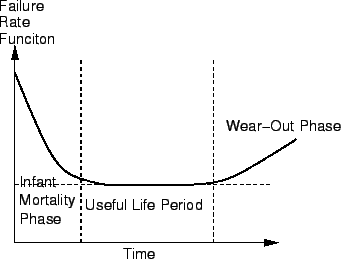
|
ช่วงเวลาที่อัตราความเสียหายมีค่าคงที่ เป็นช่วงที่เราสามารถใช้ประโยชน์ได้จากระบบ ในช่วงดังกล่าว ผู้ใช้งานสามารถคาดประสิทธิภาพที่จะได้รับจากการบริการของระบบ ในการใช้งานจริงเราพยายามข้ามช่วงการเสียหายช่วงเริ่มต้น โดยการใช้งานที่เรียกว่า Burn-in ที่เป็นการใช้งานอย่างเต็มที่ในช่วงเริ่มแรก โดยมีจุดประสงค์ที่จะเอาอุปกรณ์ที่ไม่สมบูรณ์ หรืออ่อนแอออกไปจากระบบ และเป็นการเร่งให้ระบบเข้าสู่ช่วงการใช้งานให้เร็วขึ้น โดยทั่วไปเราจะทำการเปลี่ยนอุปกรณ์ใหม่ก่อนช่วง Wear-Out ดังนั้น ประสิทธิภาพที่จะได้จากระบบจะอยู่ในช่วงการใช้งาน
จากที่กล่าวมาแล้ว ค่าฟังก์ชั่นอัตราความเสียหาย สามารถเขียนในความสัมพันธ์ของฟังก์ชั่นความน่าเชื่อถือเท่ากับ
ค่า
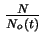 เป็นส่วนกลับของฟังก์ชั่นความน่าจะเป็น ดังนั้น เราสามารถเขียนเป็น
เมื่อจัดรูปสมการใช้อยู่ในรูปของสมการดิฟเฟอร์เรนเชียลจะได้
ถ้าเราสมมุติให้ระบบทำงานอยู่ในช่วงใชังาน
ซึ่งค่าอัตราความเสียหายมีค่าคงที่เท่ากับ
เราสามารถแก้สมการดิฟเฟอร์เรนเชียลได้เป็น
เมื่อ เป็นอัตราความเสียหายคงที่ ความสัมพันธ์ Exponential ระหว่างความน่าเชื่อถือกับเวลาเราเรียกว่ากฎการเสียหายแบบ Exponential ซึ่งให้ค่าอัตราความเสียหายมีค่าคงที่ และค่าความน่าเชื่อถือแปรผันแบบ Exponential กับเวลา
กฎการเสียหายแบบ Exponential มีประโยชน์อย่างยิ่งต่อการวิเคราะห์ค่าความน่าเชื่อถือของอุปกรณ์อิเล็กทรอนิกส์ และเป็นความสัมพันธ์ Exponential ระหว่างความน่าเชื่อถือกับเวลาที่ใช้อย่างแพร่หลายมากที่สุด อย่างไรก็ตาม เราไม่สามารถใช้กฎการเสียหายแบบ Exponential ได้ ถ้าค่าอัตราความเสียหายไม่เป็นค่าคงที่ จำเป็นต้องใช้การจำลองแบบอื่นแทน ตัวอย่างของอัตราการเสียหายที่เปลี่ยนแปลงตามเวลาได้แก่ระบบซอฟต์แวร์ การเสียหายในระบบซอฟต์แวร์มีผลมาจากการออกแบบที่มีจุดบกพร่อง. หลังจากที่ซอฟต์แวร์ได้รับการใช้งาน ผู้ใช้จะพบข้อบกพร่องนั้น และจะถูกแก้ไข จากนั้นอัตราการเสียหายจะลดลงเมื่อเวลาผ่านไป
วิธีการที่ใช้กันมากในการแสดงระบบ ที่อัตราการเสียหายที่เปลี่ยนแปลงตามเวลา ได้แก่ การกระจายแบบ Weibull อัตราความเสียหายแสดงโดย
เมื่อ 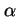 และ เป็นค่าคงที่ สำหรับควบคุมการเปลี่ยนแปลงของอัตราความเสียหายเทียบกับเวลา ตัวอย่างเช่น ถ้าค่าของ เท่ากับ 1, z(t) ก็คือค่า . ถ้าค่า มีค่ามากกว่า 1, ค่า z(t) จะมีค่าเพิ่มขึ้นเมื่อเวลาเพิ่มขึ้น เช่นเดียวกันถัา ค่า มีค่าน้อยกว่า 1, ค่า z(t) จะมีค่าลดลงเมื่อเวลาผ่านไป จากตัวอย่างของระบบซอฟต์แวร์เราสามารถจำลองการทำงานของอัตราความเสียหายโดยใช้ค่า 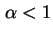
ค่าฟังก์ชั่นความน่าจะเป็นที่ใช้การกระจายแบบ Weibull คือค่าคำตอบของสมการดิฟเฟอร์เรนเชียล
ซึ่งเท่ากับ
ค่า สามารถตรวจสอบโดยคำนวณค่า
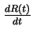
นั้นคือ
| 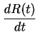 |
 |
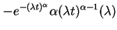 |
|
| |
|
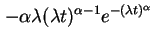 |
|
| |
|
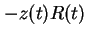 |
(10.17) |
ถ้าค่า 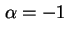 เราจะได้
ซึ่งมีค่าเท่ากับกฎการเสียหายแบบ Exponential
Next: เวลาเฉลี่ยก่อนการเสียหาย (MTTF)
Up: การประเมินเชิงปริมาณ
Previous: การประเมินเชิงปริมาณ
Contents
Index
Vara Varavithya
2002-03-09